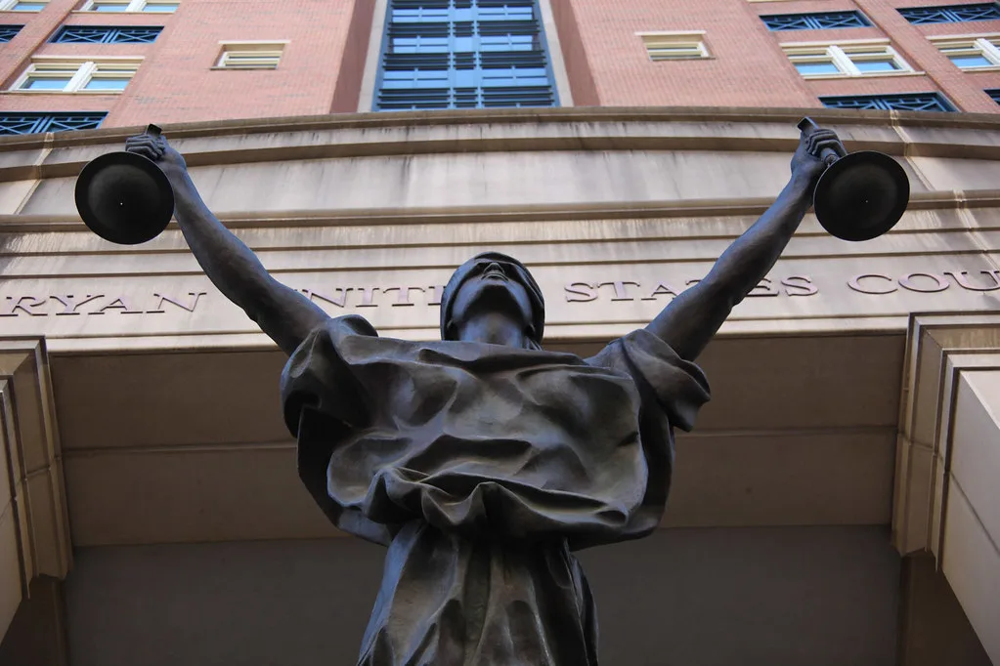

'검사 보완수사권 폐지' 형소법 국무회의 의결…10월 2일 시행
이재명 대통령이 주재한 4일 국무회의에서 검사의 보완수사권을 전면 폐지하는 내용의 형사소송법 개정안이 원안대로 심의·의결됐다. 1954년 형사소송법이 처음 제정된 이후 72년 만에 검사가 사건을 직접 수사할 수 있는 법적 근거가 사실상 사라지는 것으로, 수사와 기소를 완전히 분리하는 사법개혁의 핵심 절차가 마무리 단계에 접어들었다. 국무회의 의결은 국회 통과 이후 정부 시행 준비의 마지막 관문으로 여겨져 왔다.
개정안의 핵심은 경찰이 송치한 사건에 대해 검사가 직접 보완수사를 할 수 있도록 한 법적 근거를 삭제하는 것이다. 다만 검사가 보완수사가 필요하다고 판단하면 사법경찰관에게 보완수사를 요구할 수 있고, 요구를 받은 경찰은 최대 2개월 안에 이를 마쳐야 한다. 검사의 직접 수사권은 사라지지만, 경찰에 대한 보완수사 요구권은 절차적으로 남겨둔 셈이다. 정부는 이 같은 절차를 통해 수사 공백 우려를 최소화하겠다는 입장이다.
개정 형사소송법은 검찰청을 대체할 새로운 수사·기소 기관인 중대범죄수사청과 공소청이 출범하는 10월 2일에 맞춰 시행된다. 중대범죄수사청은 본청과 6개 지방청 체제로 꾸려지며 전체 인력은 2874명, 이 가운데 1089명이 서울청에 배치될 예정이다. 부패, 경제범죄, 방위사업, 마약, 안보(내란·외환), 사이버범죄, 사법질서 저해범죄 등 7대 중대범죄를 전담해 수사하게 된다.

정부는 이번 개정안 처리 과정에서 대통령이 거부권을 행사하는 대신, 시행 준비 과정에서 제도적 보완책을 마련하는 쪽으로 방향을 잡았다. 법무부는 국무회의 의결 이후 10월 시행에 맞춰 하위 법령 정비와 조직 구성에 속도를 낼 방침이라고 밝혔다. 공소청법과 중대범죄수사청법 등 관련 법률의 공포와 후속 준비도 병행될 예정이며, 검찰청 소속 인력과 자산을 새 기관으로 이관하는 작업도 함께 진행된다.
이번 개정은 검찰의 수사·기소권을 분리해 견제와 균형을 강화하려는 취지에서 추진돼 왔다. 정부와 여당은 수사와 기소를 한 기관이 독점하던 구조에서 벗어나 절차적 공정성을 높일 수 있다는 입장이다. 반면 야당과 일부 법조계에서는 수사 공백이나 사건 처리 지연 등 시행 초기 혼선을 우려하는 목소리도 나오고 있다. 특히 대형 경제·부패 사건처럼 복잡한 수사에서 새 체계가 제대로 작동할지가 관건으로 꼽힌다.

국무회의 의결로 법 개정 절차는 사실상 마무리 수순에 들어갔지만, 10월 시행까지 남은 두 달 동안 조직 이관과 인력 재배치, 사건 처리 매뉴얼 정비 등 실무적 과제가 산적해 있다는 평가가 나온다. 특히 수사 중인 사건들의 이관 처리와 경찰의 보완수사 역량 확보가 시행 초기 안착의 관건이 될 것으로 보인다.
법무부와 경찰청은 시행 전까지 실무 협의체를 통해 세부 절차를 조율할 계획이라고 밝혔다. 새로운 수사·기소 체계가 큰 혼란 없이 자리 잡을 수 있을지는 앞으로 두 달간의 준비 상황에 달려 있다는 관측이 법조계 안팎에서 나온다. 검찰 내부에서도 조직 개편에 따른 인력 재배치와 업무 이관을 두고 술렁이는 분위기가 감지되고 있어, 시행 전까지 남은 기간 관련 논의는 계속 이어질 전망이다.